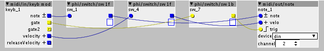

So i've been trying to do the following without much success.
I'm using an OP-1 to send MIDI via USB to Axoloti.
The Axoloti is sending DIN MIDI to a Nord Modular.
The Axoloti is receiving DIN MIDI (CCs) from an iPad running Lemur.
I want the Nord Modular to receive polyphonic input from the OP-1 while the Axo remains monophonic.
I also want to be able to switch on/off the MIDI routing to both Axo and Nord with CC switches on Lemur.
So far the only way i've found to ensure Polyphonic MIDI being received by the Nord is to use TBs MIDI Thru device in the monophonic Axo patch. But I can't trigger this on and off with a CC.
I have the following in a subpatch with the toggles for gate/note/velocity on parent. The CC trigger works fine for this but the output MONO despite setting 4 voices and Polyphonic in the subpatch settings.

Any advice is appreciated.
cheers
Lloyd
 (it is just successive note ons before note offs arrive)
(it is just successive note ons before note offs arrive)